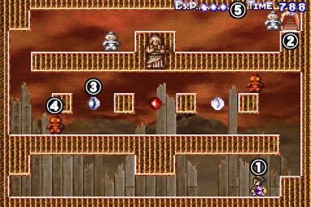

■■■ 画面構成 ■■■

１・・・プレイヤーキャラです。
攻撃・ジャンプを行うことができます。２・・・ゴールです。
ここに入るとパズルルームクリアとなります。
ただし、後述する経験値が０以下に減ってしまうと、
扉が閉まって入れなくなってしまいます。３・・・経験値アイテムです。
選択したキャラクターと、アイテムの色の組み合わせによって、
効果が異なります。
詳しくは、アイテム・トラップ・敵紹介をご覧ください。４・・・敵です。当たるとミスになります。
詳しくは、アイテム・トラップ・敵紹介をご覧ください。５・・・経験値表示と、残り時間表示です。
パズルルーム開始時は、経験値は３、残り時間は９９９です。
経験値は、アイテムを取ることによって増減します。
経験値が０以下になると、ゴールの扉が閉まってしまうので、
気をつけてください。
残り時間は、０になるとミスになります。
また、残り時間が６００、３００をきるときに、
経験値が１ずつ減ってしまいます。
■■■ 操作方法 ■■■
方向ボタン・・・左右に移動します。下でしゃがみます。
ジャンプボタン・・・プレイヤーキャラが、
自分の高さと同じだけジャンプします。
また、ジャンプボタンを押しっぱなしにすることにより、
空を飛ぶことができます。
飛行に制限はありませんが、一度ボタンを離すと、
着地するまで再度空を飛ぶことはできません。攻撃ボタン・・・敵を攻撃します。
また、トラップを作動させることもできます。
また、方向ボタンとの組み合わせにより、
真上、斜め下にも攻撃することができます。メニューボタン・・・１画面に納まらないパズルルームでメ
ニューボタンを押しっぱなしにすると、
画面外の地形を見ることができます。ジャンプ・攻撃・メニュー同時押し・・・自害します。
パズルルームをやり直したい時にどうぞ。